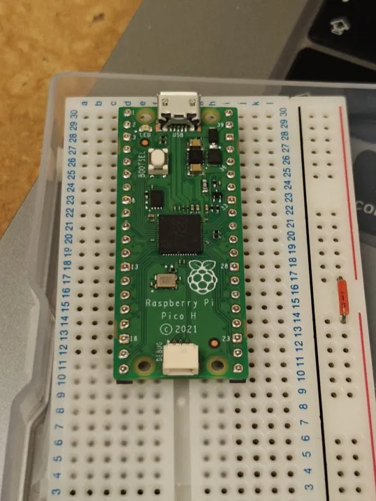
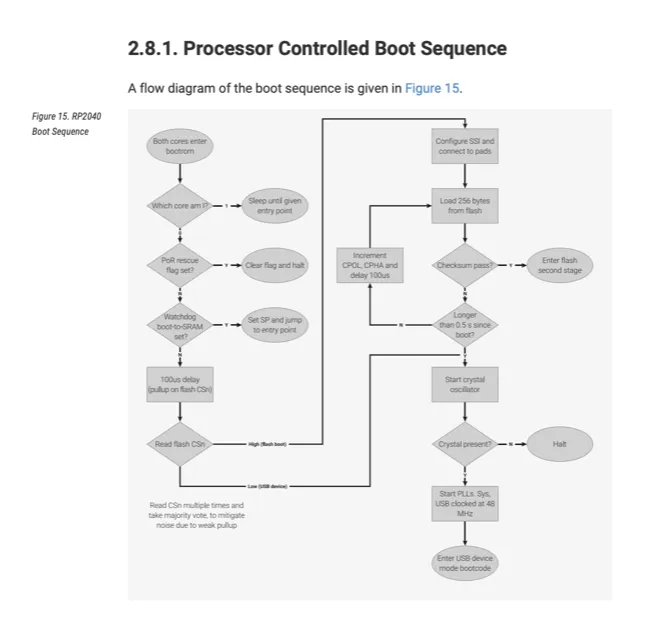
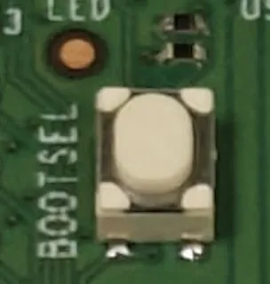
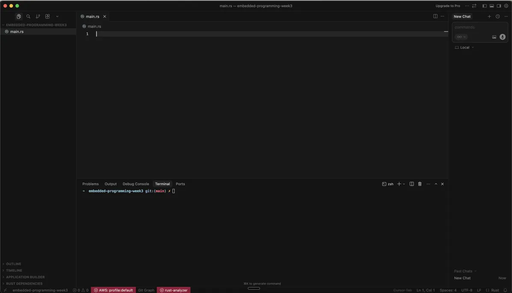

4. Embedded Programming¶

About this week¶
Briefly describe the goal of the assignment. What are you characterizing, testing, or exploring
Ger: The aim is to test a workflow to program an ESP32-C3 board using the Arduino IDE.
Shaaz: Test a workflow to run Rust programs on an RP2040 in a Pico dev board.
Tools and materials used¶
1. Ger: ESP32-C3 + Arduino IDE¶
Hardware¶
- Seeed Studio Xiao ESP32-C3 board (Ger)
- Laptop
- USB Adapter and Cable
- Electronics for demo (LED, 330 ohm Resistor, Breadboard, Jumpers)
- Multimeter (just in case!)
Software¶
- Arduino IDE and Arduino-CLI
- Terminal
- Other editors (Nano and Zed)
2. Shaaz: Rust on Pico RP2040 with Cursor & el2uf2-rs¶
Hardware¶
I took the Raspberry Pi RP2040 microcontroller from the Lab on a Pico H board (the Pico W apparently has wireless too)

The microcontroller chip here is the RP2040. The Pico is a development board based on the RP2040, which comes in four variants: 1. Pico: the RP2040 + 2MB flash 2. Pico H: Pico + Headers pre-soldered + 3pin debug connector 3. Pico W: Pico + WiFi & Bluetooth 4. Pico WH: Pico H + WiFi & Bluetooth
The headers and the debug interface pre-soldered make it convenient for prototyping using a breadboard. Additionally, the Pico dev board adds the following to the microcontroller: 1. Flash memory (2MB) 2. Crystal oscillator for timing 3. Power supply system (3.3V from 1.8V-5.5V input) 4. USB to micro-USB connector 5. LEDs, resistors, breadboard, Buttons
Software¶
- Editor (Cursor)
- Terminal
- Rust library: elf2uf2
- Claude Code for ascii diagrams and such
Process and methodology¶
Describe step-by-step what the group did. Include sketches, screenshots, or videos if possible.
1. Ger: ESP32-C3 + Arduino IDE¶
Basic Workflow¶
- Install Arduino IDE.
- Try install ESP32 Board… first install Board Package Repository.
- Fails on Timeout…(See Fix 2)
- Install
Arduino-CLI, - Edit YAML preferences,
- Retry install Board Package Repository.
- Install
- Install Board Package, and select port and Board (XIAO_ESP32C3 in this case)
- Use sample code from Wiki (a number of changes, incl. GPIO)
I have used
Fix 1: Different Chip Driver?¶
Download and install the CH340G driver.
Followed this tutorial (from the DFRobot wiki) or this tutorial (from SparkFun, more general), downloaded and installed the driver.
Fix 2: Different Board Definitions¶
Use generic ESP32 board definitions. ESP32 Dev Module or the one from Espressif should be fine.
Fix 3: Use Platformio instead¶
Probably would work, but didn’t try it this time. Using this workflow probably avoids the issue with the Arduino IDE workflow.
PlatformIO is an alternative development environment for microcontrollers that is more recent. It is more advanced, but may be more likely to get your ESP32 board working. PlatformIO runs inside VS Code and works on macOS, Windows, and Linux. Try this 10 minute tutorial and easier 4 min tutorial
Fix 4: Extend the timeout to allow the download more time to complete.¶
Described more in my individual write-up
The Custom Boards package is hosted on a CDN that wasn’t fast enough. The default timeout seems to be
300s. Based on this post by user @ptillisch, it describes how to extend the timeout and allow more time to complete.
2. Shaaz: Rust on Pico RP2040 with Cursor & el2uf2-rs¶
Workflow Overview¶
At a high-level, there are four steps: 1. Write Rust code in IDE of choice 2. Compile Rust code for RP2040 3. Transfer the program binary onto the RP2040’s flash memory 4. Run it by booting the RP2040
There’s a lot of file format conversions that happen in this process. We show below how the output of each step is fed into the input of the next:
(in IDE) write Rust code
↓
(output) .rs files
↓
(compile) run rustc / cargo build
↓
(output) ELF file (wraps ARM Cortex M0+ compatible binary)
↓
(convert) run elf2uf2-rs
↓
(output) UF2 file (compatible for USB copying)
↓
(in file explorer) drag-drop .uf2 to RP2040's drive
↓
(output) ROM bootloader writes program to flash
↓
(reboot) the Pico auto-reboots
↓
(output) program runs on RP2040
So effectively, we have the following steps: 1. Compiling Rust for the RP2040 target, i.e. ARM Cortex-M0+ instructions wrapped in an ELF file 2. Extract just the raw binary for the code from the ELF into UF2 so we can flash it directly: 1. the RP2040 can only execute raw bytes and expects code at certain memory addresses 2. However, we can’t safely copy paste the raw binary via a USB drive because when you drag-and-drop a file onto a USB drive the OS does NOT guarantee: 1. Write order - Blocks might arrive out of sequence, OS might cache/buffer writes, multiple processes could access the drive simultaneously 2. Atomicity - Transfer might be interrupted midway 3. The UF2 format contains metadata for each line of instructions code about which memory address it’s supposed to go to, so that the bootloader on the RP2040 can copy over the instructions to the correct memory location despite the disorderly USB copying.
RP2040 Boot Sequence¶
From the datasheet, see the RP2040’s boot sequence below. We can see two paths: the flash boot and the USB device boot.

After hardware reset, both processor cores enter ROM at the same address. Processor 1 immediately goes to deep sleep (WFE with SCR.SLEEPDEEP enabled), while Processor 0 continues executing the bootrom. Processor 0 then works through a priority chain:
- Rescue DP check: If the power-up event was from Rescue DP, halt immediately and wait for the debug host.
- Watchdog boot check: If the watchdog scratch registers contain a magic number (
0xb007c0d3in scratch 4), jump to pre-loaded code in SRAM. This allows users to divert away from the main boot sequence on non-POR resets. - BOOTSEL check: If the SPI CS pin is tied low (which is what the BOOTSEL button does on the Pico board), skip flash boot entirely and go straight to USB device boot.
- Flash boot: Set up IO muxing on QSPI pins, issue an XIP exit sequence, copy 256 bytes from SPI flash to internal SRAM (SRAM5), and validate a CRC32 checksum. If the checksum passes, execute this “flash second stage” which configures the SSI and flash for proper XIP execution.
- USB device boot fallback: If no valid flash image is found after ~0.5 seconds (~128 attempts at ~4ms each), fall back to USB device boot.
Firmware Storage: Flash vs SRAM¶
For #3 (transfer), there are a few options. The RP2040 can run programs from one of two destinations: 1. Flash memory (program persisted permanently, executed via XIP after the flash second stage configures it) 2. SRAM (program persisted temporarily, gets erased on power cycling — used by the watchdog boot path and the USB device boot’s direct-to-SRAM loading)
We’ll focus on the flash memory route only: the SRAM route has its uses, but it’s out of scope for now.
Firmware transfer interfaces: USB vs SWD¶
There are two primary interfaces to get the code into flash memory: 1. USB 2. SWD (Serial Wire Debug)
We’ll use USB, but let’s take a quick look at SWD.
a. SWD¶
The SWD is a hardware interface built into the ARM Cortex-M0+ and works even when the chip is bricked or the flash is blank or corrupted. We do not use it because it requires an extra microcontroller running special firmware, e.g. the Raspberry Pi Debug Probe ($12).
Pico H Debug Probe
┌─────────┐ ┌──────────┐
│ SWCLK │◄────────►│ SWCLK │
│ SWDIO │◄────────►│ SWDIO │
│ GND │──────────│ GND │
└─────────┘ └──────────┘
│
USB to PC
b. USB¶
To use USB, we must press and hold the BOOTSEL button while booting the RP2040 on the Pico. The BOOTSEL button ties the SPI CS pin low, which tells the bootrom to skip the flash boot path entirely and jump straight to USB device boot. (The chip always boots from ROM regardless — BOOTSEL just makes the bootrom skip the flash-checking stage.)

Power on / Reset
↓
Processor 0 checks: Watchdog scratch registers set?
├─ YES ──→ Jump to pre-loaded code in SRAM
↓ NO
Processor 0 checks: Is SPI CS pin tied low (BOOTSEL)?
├─ YES ──→ Skip flash, go to USB device boot
↓ NO
Attempt flash boot (copy 256B from SPI → CRC32 check)
├─ PASS ──→ Execute flash second stage
↓ FAIL (after ~0.5s)
Fall back to USB device boot
ROM Bootloader: flash drive vs picoboot¶
This gets the ROM bootloader to run its USB device boot mode, which talks to the PC via two different USB interfaces:
- USB flash drive:
- mechanism: the ROM bootloader appears as a USB Mass Storage Device to your PC
- user interface: copy over files to the drive. They have to be .uf2 files so it’s safe to copy them over.
- USB picoboot protocol:
- mechanism: the ROM bootloader implements a vendor-specific protocol for RPi, and exposes a second interface to your PC
- user interface: use the picotool cli program to write the program directly to flash memory
Workflow options diagram¶
To summarize our options with a diagram:
┌─────────────────────────────────────────────────────────┐
│ YOUR COMPUTER │
│ │
│ File Manager picotool probe-rs │
│ │ │ │ │
│ │ (drag) │ (USB cmd) │ (SWD proto) │
│ ↓ ↓ ↓ │
└───────┼───────────────┼─────────────────┼──────────────┘
│ │ │
│ USB Cable │ USB Cable │ USB Cable
↓ ↓ ↓
┌───────────────────────────┐ ┌──────────────┐
│ RP2040 ROM BOOTLOADER │ │ Debug Probe │
│ (BOOTSEL mode) │ │ │
│ │ └──────┬───────┘
│ ┌──────────┐ │ │
│ │ USB Mass │ │ │ 3 wires (SWD)
│ │ Storage │ │ ↓
│ └──────────┘ │ ┌──────────────┐
│ ┌──────────┐ │ │ RP2040 │
│ │ PICOBOOT │ │ │ Debug Access │
│ │ Protocol │ │ │ Port (DAP) │
│ └──────────┘ │ └──────┬───────┘
└────────┬──────────────────┘ │
│ │
↓ ↓
┌────────────────────────────────────────┐
│ Flash Memory (0x10000000) │
│ [Your Program Code Here] │
└────────────────────────────────────────┘
My final choice¶
We’ll choose File Manager drag-drop + ROM Bootloader via USB Mass Storage route.
The Debug Probe seems the most time efficient path for regular iteration, but I’m just curious how it all works underneath. Here’s the high-level workflow:
cargo build (build the Rust code)
↓
ELF file (has everything - code, symbols, debug info)
↓
elf2uf2-rs extracts just the code + data
↓
UF2 file (just the raw bytes to flash in a USB-friendly format)
↓
Bootloader writes to flash memory
Diving deeper: Cursor IDE + Rust + elf2uf2-rs + USB flash drive mode¶
1. IDE: Cursor / VSCode¶
I decided to use my usual editor Cursor, which is a fork of the open-source VSCode with some AI integration in the interface. As you can see I have the file explorer in the left column, and I split my main panel horizontally to have access to the terminal via my go-to shell zsh and the code on the top.

It was already installed, but easy to setup via https://cursor.com/download.
2. Programming Language: Rust¶
I decided it to try and run the Rust programming language on the RPi. I’ve used Rust at work, so I have experience with the language. Rust: - is a compiled language, i.e. you don’t need an interpreter to run it (like Python or JS), so it’s a program that converts to hardware instructions using a compiler and this doesn’t need another running program to run it. - has no garbage-collector, i.e. memory is not automatically managed at runtime (i.e. unlike Python/JS/Go but like C++, C) - introduces memory safety paradigms at compile time, innovative for a non-GC’d language, i.e. it ensures all references point to valid memory if there are no compile errors (subject to using only safe primitives). This prevents common errors like: - the C-style ‘segmentation fault’ errors for accessing invalid memory (hard to debug) - memory leaks or logic errors due to invalid memory access - influenced by functional programming paradigms that I value: immutability, higher-order functions, ADTs (abstractions that are rare for systems programming languages)
I used Rust in a previous job while building a cloud compute platform where users explicitly paid for RAM allocated for their programs (e.g. AWS Lambda). We had to run orchestration software with predictable memory overheads without the safety concerns of C and the tail-latency spikes of garbage-collected languages like Go and Java.
1. Sample Rust program (main.rs file()¶
Here’s a basic Rust hello world:
fn main() {
println!("Hello world!");
}
2. Rust Setup¶
For minimal setup, you need to install the compiler rustc.
We’ll use the rustup installer which installs a whole set of associated things (such as the cargo package manager), by following https://rust-lang.org/tools/install/
curl --proto '=https' --tlsv1.2 -sSf https://sh.rustup.rs | sh
rustup update
To verify, run the following commands:
➜ embedded-programming-week3 git:(main) ✗ rustc --version
rustc 1.86.0 (05f9846f8 2025-03-31)
3. Compiling sample program main.rs¶
As you can see, running rustc with the main.rs file above as input generates a binary file called main with executable permissions (i.e. the x in -rwxr-xr-x@)
➜ embedded-programming-week3 git:(main) ✗ ls
main.rs
➜ embedded-programming-week3 git:(main) ✗ rustc main.rs
➜ embedded-programming-week3 git:(main) ✗ ls -lah
total 944
drwxr-xr-x 4 shaazahm staff 128B Feb 15 15:13 .
drwxr-xr-x@ 18 shaazahm staff 576B Feb 15 14:51 ..
-rwxr-xr-x@ 1 shaazahm staff 466K Feb 15 15:13 main
-rw-r--r-- 1 shaazahm staff 501B Feb 15 15:08 main.rs
On Linux, this is an ELF file. For RP2040’s architecture, we need to specify a target (shown later).
rustc main.rs # → Generates ELF on Linux
# → Generates Mach-O on macOS
# → Generates PE on Windows
4. Running main.rs¶
Just call the binary created from the terminal.
➜ embedded-programming-week3 git:(main) ✗ ./main
Hello world!
5. Compiling for the RP2040¶
To compile for embedded platforms, you have to specify special target parameters to the compiler:
# → Generates ARM Cortex-M0+ ELF (for RP2040)
rustc main.rs --target thumbv6m-none-eabi
From https://doc.rust-lang.org/beta/rustc/platform-support/thumbv6m-none-eabi.html, we can see that it’s the:
Bare-metal target for CPUs in the Armv6-M architecture family, supporting a subset of the [T32 ISA].
Processors in this family include the:
- Arm Cortex-M0
- Arm Cortex-M0+
- Arm Cortex-M1
In practice we use the cargo package manager instead of rustc to build this target if we configure it right.
3. Compiling the program (using cargo)¶
We will use the cargo package manager to configure cargo to build for the ARM Cortex-M0+ target.
Step 1: Verify cargo is installed¶
We use the cargo package manager to build our app for the ARM Cortex-M0+ target. We installed this earlier with rustup, verify it is correctly installed
➜ embedded-programming-week3 git:(main) ✗ cargo --version
cargo 1.86.0 (adf9b6ad1 2025-02-28)
Step 2: Initialize cargo package¶
From your project directory run:
➜ embedded-programming-week3 git:(main) ✗ cargo init
Creating binary (application) package
This will create a Cargo.toml file where you can display your project dependencies, etc.
[package]
name = "embedded-programming-week3"
version = "0.1.0"
edition = "2024"
[dependencies]
[[bin]]
name = "embedded-programming-week3"
path = "main.rs"
See available configurations here: https://doc.rust-lang.org/cargo/reference/manifest.html
Step 3: Configure ARM-Cortex M0+ compilation target¶
Then install the ARM-Cortex M0+ specific target that will tell the compiler how to output the program binary for our RP2040:
➜ embedded-programming-week3 git:(main) ✗ rustup target add thumbv6m-none-eabi
info: downloading component 'rust-std' for 'thumbv6m-none-eabi'
info: installing component 'rust-std' for 'thumbv6m-none-eabi'
Then, we initialize the .cargo/config.toml where configure some config for cargo itself that are not package-scoped (see all options here):
mkdir -p .cargo && touch .cargo/config.toml
Update the config file so that the contents are as below, to configure our current repo to compile for the ARM Cortex M0+ target:
[build]
target = "thumbv6m-none-eabi"
This sets the default target when you run cargo build to the architecture of the RP2040.
Step 4: Compile (attempt #1)¶
Let’s try build our Hello World program for the target:
➜ embedded-programming-week3 git:(main) ✗ cargo build
Compiling embedded-programming-week3 v0.1.0 (/Users/shaazahm/workspace/hq-fabacademy/shaaz-ahmed/embedded-programming-week3)
error[E0463]: can't find crate for `std`
|
= note: the `thumbv6m-none-eabi` target may not support the standard library
= note: `std` is required by `embedded_programming_week3` because it does not declare `#![no_std]`
error: cannot find macro `println` in this scope
--> main.rs:2:5
|
2 | println!("Hello world!");
| ^^^^^^^
error: `#[panic_handler]` function required, but not found
error: requires `sized` lang_item
For more information about this error, try `rustc --explain E0463`.
error: could not compile `embedded-programming-week3` (bin "embedded-programming-week3") due to 4 previous errors
Whoops, we get a compile error. What’s happening here is that the thumbv6m-none-eabi target is a bare-metal embedded target without an operating system, so it doesn’t support the standard library functions such as println!
Step 5: Adapting code for RP2040 target¶
We need to do a few things:
1. Add #![no_std] to the top of main.rs to use Rust without the stdlib
2. Tell Rust we’re bringing our own main() entry point (because main requires the stdlib):
1. Adding #![no_main] to the top of main.rs
2. Adding #[entry] above the main() to tell Rust that we’ll bring our own entry point
3. Add required dependencies (packages or ‘crates’):
1. cortex-m-rt: Startup code and minimal runtime for Cortex-M microcontrollers. See documentation in https://docs.rs/cortex-m-rt/latest/cortex_m_rt/
2. panic-halt which halts the program on exception. Other options include panic-abort (reset the RP2040), panic-semihosting (print via debug probe), panic-rtt (print via rtt)
3. cortex-m : for low-level access to Cortex-M processors, just for our example code
4. Update main() function: embedded programs are usually written to run forever
1. update signature of entry point: fn main() -> ! { (i.e. never returns)
2. have a loop forever or until some termination condition loop {}
Updated program:
#![no_std]
#![no_main]
use cortex_m_rt::entry;
use panic_halt as _; // Panic handler
#[entry]
fn main() -> ! {
// e.g.
loop {
// Delay for approximately 1 million CPU cycles
cortex_m::asm::delay(1_000_000);
}
}
To write a meaningful program, we need to add more dependencies, which we’ll explore in the individual assignment.
Install dependencies:
cargo add cortex-m-rt
cargo add panic-halt
cargo add cortex-m
If you view the Cargo.toml file, you will see the new dependencies:
[package]
name = "embedded-programming-week3"
version = "0.1.0"
edition = "2024"
[dependencies]
cortex-m = "0.7.7"
cortex-m-rt = "0.7.5"
panic-halt = "1.0.0"
[[bin]]
name = "embedded-programming-week3"
path = "main.rs"
Step 6: Compile (attempt #2)¶
Now, let’s compile the program.
➜ embedded-programming-week3 git:(main) ✗ cargo build
Downloaded rustc_version v0.2.3
Downloaded vcell v0.1.3
Downloaded void v1.0.2
Downloaded semver v0.9.0
Downloaded volatile-register v0.2.2
Downloaded semver-parser v0.7.0
Downloaded nb v0.1.3
Downloaded bare-metal v0.2.5
Downloaded nb v1.1.0
Downloaded bitfield v0.13.2
Downloaded embedded-hal v0.2.7
Downloaded cortex-m v0.7.7
Downloaded 12 crates (276.4 KB) in 0.12s
Compiling semver-parser v0.7.0
Compiling nb v1.1.0
Compiling void v1.0.2
Compiling cortex-m v0.7.7
Compiling vcell v0.1.3
Compiling bitfield v0.13.2
Compiling volatile-register v0.2.2
Compiling nb v0.1.3
Compiling embedded-hal v0.2.7
Compiling semver v0.9.0
Compiling rustc_version v0.2.3
Compiling bare-metal v0.2.5
Compiling embedded-programming-week3 v0.1.0 (/Users/shaazahm/workspace/hq-fabacademy/shaaz-ahmed/embedded-programming-week3)
Finished `dev` profile [unoptimized + debuginfo] target(s) in 2.29s
Step 7: Testing the program¶
This turned out to be tricky. The binary we compiled for the RP2040 won’t obviously work on the Mac. And we can’t compile for the Mac because the programs are written differently for bare-metal microcontrollers.
Options for testing: 1. Run the program directly on the hardware: straightforward, preferred in this ecosystem 2. Unit tests to test the logic of the program: it doesn’t give full confidence, but Rust has traits, i.e. interfaces, and we could mock out the traits for the RP2040 HAL (hardware abstraction layer) 3. Emulate RP2040. There are programs out there that emulate different hardware architectures, listed below. However, someone noted: “emulators have very limited value for MCU work since almost all of the work is related to peripherals and pins”. Some emulators: 1. QEMU: can emulate some ARM Cortex-M processors, but RP2040 is unsupported. 2. Renode: RP2040 support is marked work-in-progress and frozen, see https://github.com/matgla/Renode_RP2040 3. Wokwi (nice!): a browser based emulator that supports RP2040, but Rust compilation is only supported via the VSCode Extension: https://docs.wokwi.com/vscode/getting-started
4. Transferring program to flash memory¶
Now that in step 6 we compiled the program for the RP2040 target, to run the program on the RP2040, we have to write it to the Pico flash memory. We will explore two ways to do this.
Option 1: using picotool¶
The most straightforward.
# Build the code
cargo build --release
# Flash directly (no file format conversion needed!)
picotool load target/thumbv6m-none-eabi/release/embedded-programming-week3
# Can even reboot into BOOTSEL programmatically
picotool reboot -f -u # Force reboot into USB mode
Option 2: using elf2uf2-rs and copy into USB drive¶
We will configure cargo to use the elf2uf2-rs application to convert the built program’s ELF file to UF2 format for copying over USB. Eventually running it all to convert and copy over the files, and the RP2040 will automatically reboot.
Step 1: configure cargo to use elf2uf2-rs¶
First we install the elf2uf2-rs tool that will convert the ELF file generated by the compiler into the UF2 file that we can use to copy over to the flash drive:
cargo install elf2uf2-rs --locked
Update the .cargo/config.toml file so that the contents are as below:
[build]
target = "thumbv6m-none-eabi"
[target.thumbv6m-none-eabi]
runner = "elf2uf2-rs -d"
Step 2: compiling & writing program to flash memory¶
Then we boot the RP2040 into “USB Bootloader mode”, by rebooting whilst holding the “BOOTSEL” button (explained in previous section).
Then we can just run with cargo run, which will compile the code and started the specified ‘runner’ in .cargo/config.toml. As the ‘runner’ is the elf2uf2-rs tool, it will build an ELF file, use the call the runner with ELF file which will convert it to UF2 file and copy it to the RP2040.
Appendiix: File Formats¶
ELF = Executable and Linkable Format
It’s the ** executable file format on Unix/Linux systems (like .exe is for Windows). It’s kind f like a container** that holds your compiled machine code plus metadata about how to load and run it.
What’s inside an ELF file:¶
Prompt: "draw a bare minimal ascii diagram of the parts of an ELF file for the RP2040 + Pico board, showing the different content it has apart from code"
┌─────────────────────────────────────┐
│ ELF Header │ ← Magic number, architecture, entry point
├─────────────────────────────────────┤
│ Program Headers (segments) │ ← How to load into RAM
│ - .text segment (code) │
│ - .data segment (initialized data)│
│ - .rodata (constants) │
│ - .bss (uninitialized data) │
├─────────────────────────────────────┤
│ Section Headers (more detailed) │ ← For linker/debugger
│ - Symbol table │ ← Function names, variable names
│ - Debug info (DWARF) │ ← Line numbers, source mapping
│ - Relocation info │ ← For dynamic linking
└─────────────────────────────────────┘
What’s inside an UF2 file:¶
Prompt: "draw a bare minimal ascii diagram of blokcs in a UF2 file indicating how they can stored metadata about order of programs to be flashed onto the RP2040"
# UF2 is a container format that wraps your binary
┌──────────────────────────┐
│ Block 0 (512 bytes) │
│ - Magic number │
│ - Target addr: 0x10000000│
│ - 256 bytes of data │
│ - Checksum │
├──────────────────────────┤
│ Block 1 (512 bytes) │
│ - Target addr: 0x10000100│
│ - 256 bytes of data │
│ - Checksum │
├──────────────────────────┤
│ ... more blocks ... │
└──────────────────────────┘
What the raw executable file for RP2040 might look like:¶
Example of RP2040 raw byte format:
0x10000000 -> Initial Stack Pointer (MSP)
0x10000004 -> Reset Handler (entry point)
[...redacted...]
0x1000003C -> SysTick Handler
0x10000040 -> IRQ0 Handler (onward...)
...
0x100000FC -> CRC32 checksum (last 4 bytes of 256-byte boot2)
0x10000100 -> User code begins (after boot2)
Group conclusions¶
Findings: [What did you learn from the process?]
1. Ger: ESP32-C3 + Arduino IDE¶
Learned about electronics and code. Used the Datasheet to learn the capabilities of the board, in particular, the functions of GPIO’s on the board. The SoC board is a breakout of the functionality of the chips (ESP32 and RP2040). The board adds UART, voltage regulation, Analog-to-Digital conversion and digital inputs, and makes it very compatible for new users, and allows new users to use with breadboards and a number of other compatible shields (Grove and other expansion boards on the Seeed Studio website).
Types of Pins: * Digital * Analogue * PWM * RXTX * POWER (eg VCC, 3v3, GND and AREF) * I2C, SPI, JTAG. Protocols for addressing peripherals, sensors,
2. Shaaz: Rust on Pico RP2040¶
I finally managed to run Rust on the RP2040 on a Pico board. I used: - the Cursor IDE - compiled my programs using the Rust package manager cargo for the specific ARM target - converted the compiled program ELF file into UF2 format - copied the UF2 format into the Pico board’s flash memory by simple drag-and-drop
I wanted to run Rust on the RP2040, and this didn’t seem to be supported by the standard IDEs like Arduino or Thonny. This meant that we have to do the things that these IDEs do a bit more manually, using the language ecosystem. Some learnings: 1. The Rust standard library isn’t available on the RP2040 because it doesn’t have an operating system, so the programs look a bit different from what I’m used to. 2. Testing Rust programs written for the RP2040 without running it on real hardware is currently possible only with a third-party VSCode extension. This is because we compile for the RP2040 architecture, but there is no emulator support for that. 3. The RP2040 can boot from SRAM (Watchdog boot) for debugging when bricked, or from flash memory (standard boot) 4. There are three options to get programs into the flash memory: via the SWD debug interface or via two USB programs built into the ROM bootloader 5. Picotool is the easiest, but if you buy the $4 RPi debug probe, that may provide a much better debugging experience.
Challenges: [What issues did you encounter?]
- Ger: The boards library didn’t load as expected.
- Ger: Breadboard problems. Connections won’t survive to much movement. Connections are unreliable, fail in way that is not visibly evident, which may interrupt more complex connections.
Solutions: [How did you solve them?]
- Ger: Extended the IDE timeout to allow board manager to download from the host. Evaluated a number of different options. Installing CHG driver wasn’t required, eventually had to extend to setting for IDE Timeout.
- Ger: Will fix with custom PCB pad connections in Electronics Production…
Files¶
See below link to to files created this week: